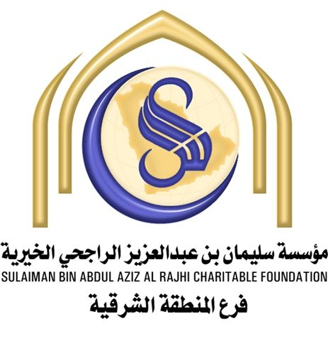

<ion-view view-title="الرعاية">            
	<ion-content class="ionic-body" has-header="true" padding="true">
    <link href="css/care.css" rel="stylesheet">
    
    <div class="frame">
        <div class="team-position">
        <div class="team">
            <div class="aboutus-left">
                <div></div>
            </div>
            <div class="aboutus-right">
                <div dir="rtl" class="name">الشيخ الفاضل </div>
                <div dir="rtl" class="job">الراجحي</div>
                <br><hr>

                <p dir="rtl">           
هذا التطبيق برعاية مؤسسة سليمان بن عبد العزيز الراجحي الخيرية ( فرع المنطقة الشرقية )<br><br>
                

                الرؤية :<br>
                
                ريادة المنح الخيري لتنمية المجتمع بإتقان وإيمان<br><br>
                
                الرسالة :<br>
                
                تقديم المنح لتعظيم الخير ، وتحقيق النمو المجتمعي ، وتمكين المستفيدين  بافضل الممارسات .<br><br>
                
                
                نظرًا لما يتطلبه التطوير والتحسين المستمر للعمل الخيري بالمؤسسة بما يحقق رسالتها التي تنص على العمل المؤسسي المتجدد ، وبما يجعل الدعم أكثر فاعلية وتميزا ، ويجعل الإجراءات ميسرة وواضحة . <br>
                
                لذا رأت المؤسسة أن يكون دعمها وفقًا  لأهداف محددة يمكن قياسها ومتابعتها ورصد آثارها ونتائجها في المجتمع ، وتحمل اسما خاصا كمشروع أو برنامج برعاية تامة من مؤسسة سليمان بن عبدالعزيز الراجحي الخيرية ، تشارك الجهات الخيرية في تنفيذه ، وتتوحد جهودها ويتم تنسيق العمل بينها تحت ظل أهداف المؤسسة و في ضوء رؤيتها أن تكون رائدة في العمل الخيري .<br>
                
                و هذه الآلية هي من باب المشاركة بين الجهات و المؤسسة في سبيل الرقي في العمل الخيري ، سائلين المولى عز وجل أن يوفق الجميع لما فيه صلاح البلاد و العباد .<br><br>
                
                
                والحمد لله رب العالمين
                
                <br>
                </p>
               </div>
        	</div>
     	 </div>
   	 </div>
      
  </ion-content>
</ion-view>